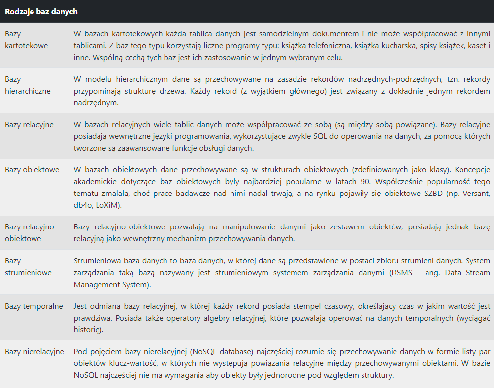
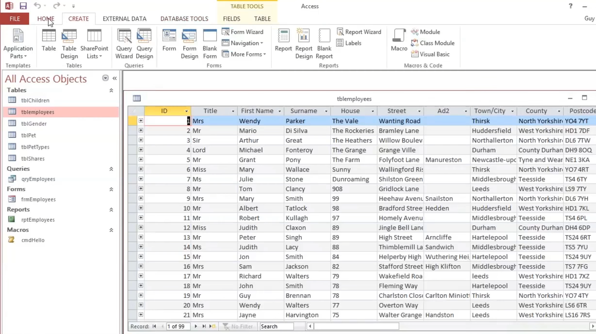

Relacyjne bazy danych to takie w których tabele są ze sobą powiązane za pomocą relacji.
Baza danych
-
Baza danych to zbiór danych zapisanych w odpowiednim formacie. Format zapisu danych pozwala na dostęp do danych. W zależności od zastosowania dane zapisywane są w różny sposób. Sposób zapisu danych ma wpływ na wydajność poszczególnych operacji (zapisu, odczytu, usunięcia i modyfikacji danych). 
Klucz podstawowy
-
Klucz podstawowy jest polem lub zestawem pól o unikatowych wartościach w tabeli. Wartości klucza mogą służyć do tworzenia odniesień do całych rekordów, ponieważ każdy rekord ma inną wartość klucza. Każda tabela może mieć tylko jeden klucz podstawowy.
PESEL Imię Nazwisko Miasto Kod pocztowy Adres 69072144272 Mikołaj Zieliński Mikołajki 11-730 ul.Krótka 49 60071587419 Dominik Kwiatkowski Giżycko 11-500 ul.Portowa 23 66081987588 Jędrzej Baranowski Pisz 12-200 ul.Słoneczna 54 67110215511 Cezary Marciniak Ryn 11-520 ul.Pocztowa 79 60012857667 Gabriel Jankowski Mrągowo 11-700 ul.Źródłowa 66 W powyższej tabeli funkcje klucza podstawowego pełni kolumna oznaczona ikoną
.
Pełni tę funkcję, ponieważ zestaw tych wartości nie powtarza się w kolejnych kolumnach. MySQL
-
MySQL rozwijany jest przez firmę Oracle. Wcześniej przez większość czasu jego tworzeniem zajmowała się szwedzka firma MySQL AB. MySQL AB została kupiona 16 stycznia 2008 roku przez Sun Microsystems, a ten 27 stycznia 2010 roku przez Oracle. W międzyczasie Monty Widenius (współtwórca MySQL) stworzył MariaDB – forka (alternatywną wersję) opartego na licencji GPL. MariaDB jest oparta na tym samym kodzie bazowym co MySQL i dąży do utrzymania kompatybilności z jej poprzednimi wersjami.
Najważniejsze cechy MySQL
MySQL był pisany raczej z myślą o szybkości niż kompatybilności ze standardem SQL – przez dłuższy czas MySQL nie obsługiwał nawet transakcji, co było zresztą głównym argumentem przeciwników tego projektu. MySQL obsługuje większą część obecnego standardu ANSI/ISO SQL (tj. SQL:2003). Wprowadza również swoje rozszerzenia i nowe elementy języka.
W wersji 5 dodano m.in:- procedury składowane
- wyzwalacze
- widoki
- kursory
- partycjonowanie tabel
- harmonogram zadań
Microsoft Access
-
Jednym z wielu programów w którym możemy stworzyć i administrować swoją bazą danych jest Microsoft Access.

Poniżej można zobaczyć interfejs programu: